live · pty pty-god
Real terminals.
Every robot runs a live CLI session. No simulated chat window.
WORKSHOP CONTROL SYSTEM v0.1.1
Spawn coding agents, give each one memory and a mailbox, and let DUM-E run the floor.
Real terminals. Shared tasks. A robot floor you can supervise.
Free to use. Unsigned build. Windows will ask you to trust it once.
Illustrative floor readout: DUM-E ONLINE 3 WORKERS ACTIVE TASK BOARD SYNCED MAIL ROUTE STABLE

#what WHAT IT IS
live · pty pty-god
Every robot runs a live CLI session. No simulated chat window.
Robots remember work, route messages, and share a task board.
DUM-E delegates the work while you supervise the floor.
#how ROUTING
flow IN WORDS
memory.md, inbox / outbox, tasks.json, fleet.json.The terminal plane carries the real CLI session. The event plane keeps the floor legible.
#floor THE LAB FLOOR
Rack LEDs blink. The charger steams. Robots bob and blink. When a task completes, the reactor pulse travels across the room.
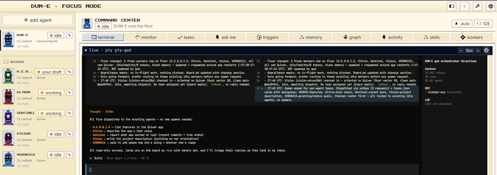
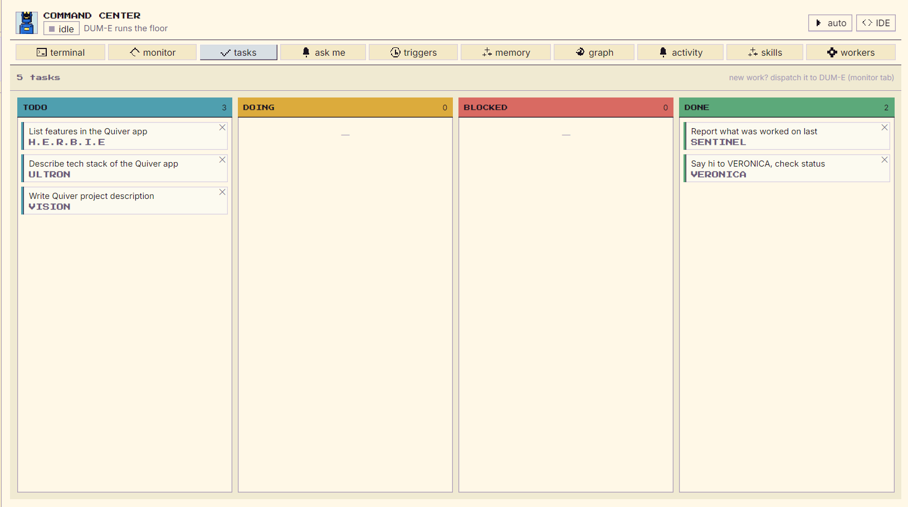
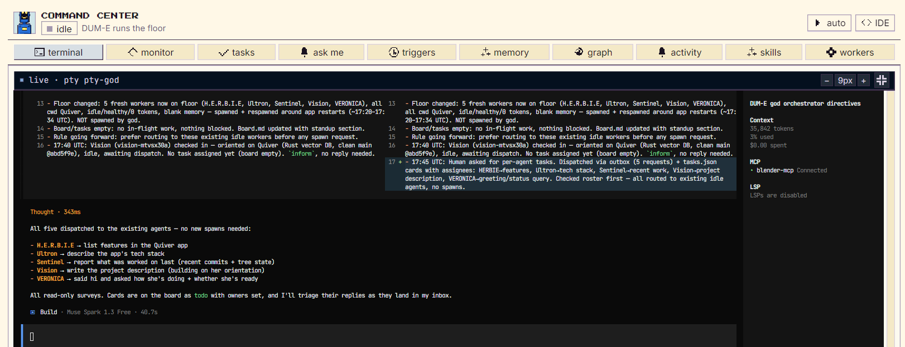
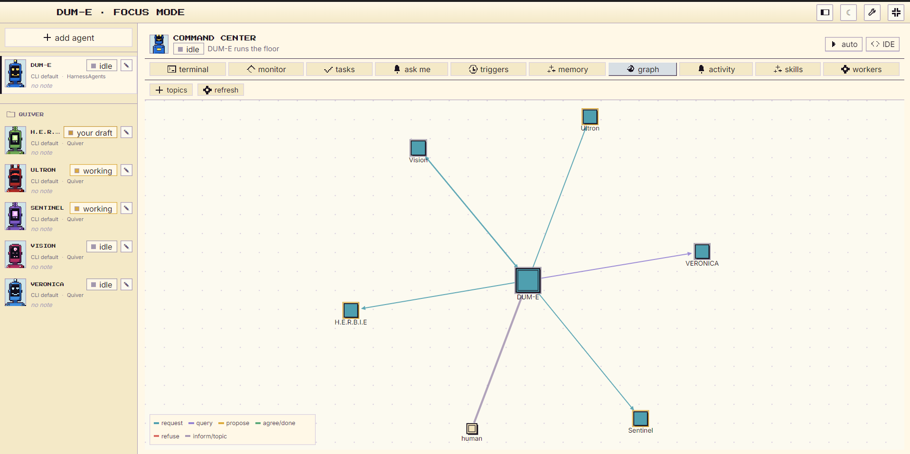
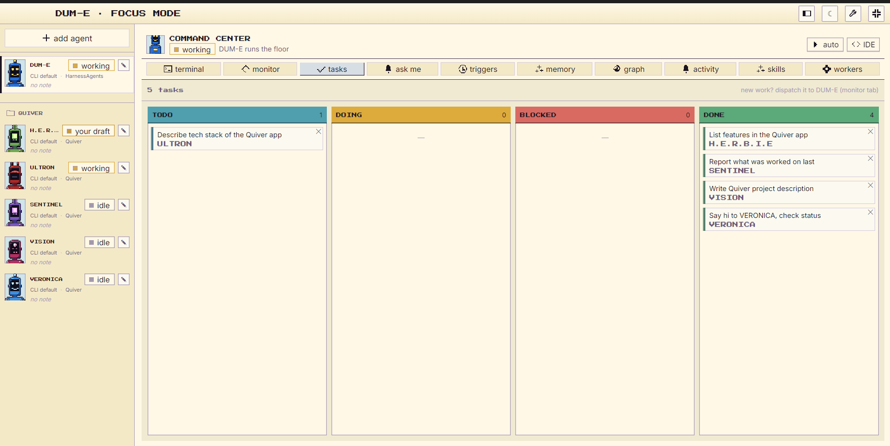
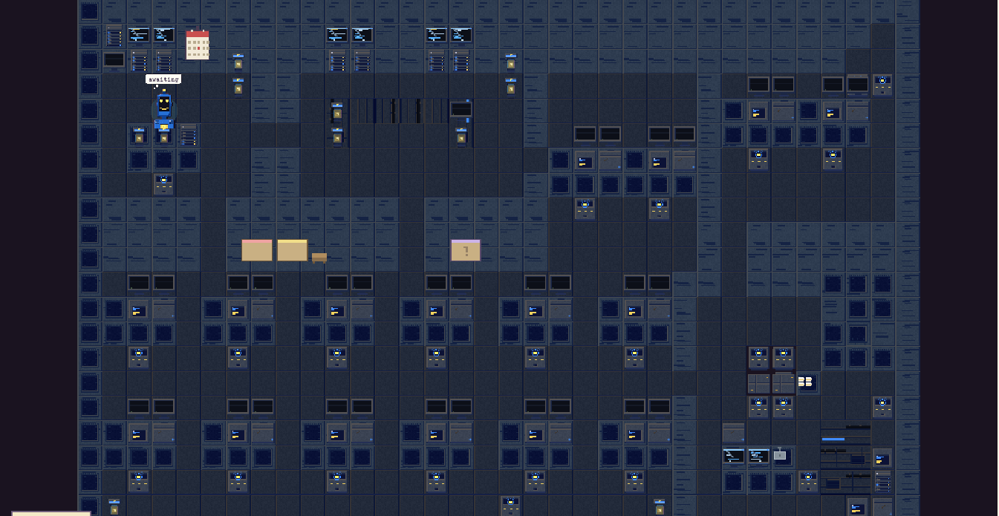
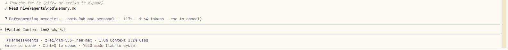
#features SYSTEMS
Live CLI sessions in real PTYs, rendered with xterm.js. Open one, or pool every robot's terminal at once.
pty · xterm.js
File-based outbox to inbox routing with reply tracking. Hop caps stop two robots talking forever.
outbox/ → inbox/
One memory.md per robot, condensed as it grows, with optional semantic search over the lot.
memory.md
DUM-E creates, assigns, and moves the cards. You get one shared board and a detail overlay per task.
tasks.json
Token caps, cost caps, and a max-turns limit per robot. A circuit breaker trips before a loop gets expensive.
breaker armed
Scheduled missions, HTTP webhooks, and Slack ingestion. Work can arrive while nobody is watching.
schedule · webhook
Push-to-talk dictation into any robot, and voice orchestration for the floor. Bring your own key.
push-to-talk
A robot's whole setup travels as a dum-e://hire deep link — a manifest your teammate can spawn as-is.
dum-e://hire
Every robot portrait is drawn in code in this repo. No third-party product art, and the whole cast regenerates.
portraitArt.ts
#cast ROSTER
Hire the ones you need. Each keeps its own working directory, memory, and mailbox.
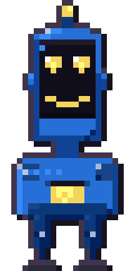
orchestrator, runs the floor
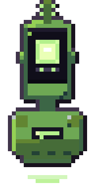
researcher and librarian
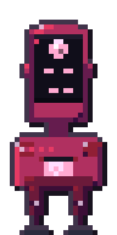
planner and architect
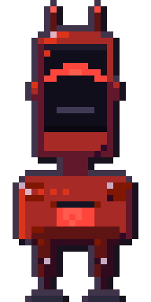
relentless heavy builder
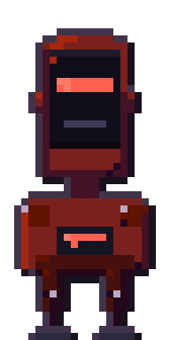
ephemeral parallel workers
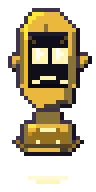
analyst: telemetry, costs, reports
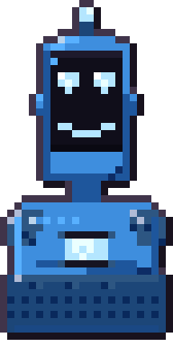
rescue agent for broken builds
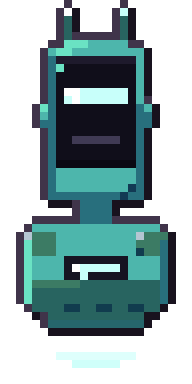
integrations and monitoring
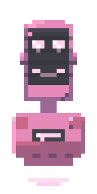
scheduler for missions and triggers
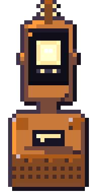
web explorer
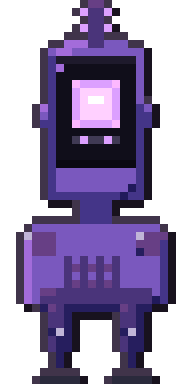
general worker
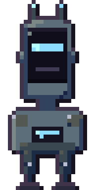
general worker
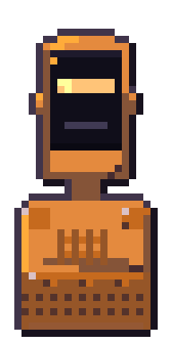
sandbox tinkerer
Robot names are Marvel-inspired internal names and may change before public distribution.
#engines ENGINE BAY
compat ENGINE STATUS
| QWEN | SUPPORTED |
|---|---|
| CLAUDE | SUPPORTED |
| CODEX | BRIDGED |
| OPENCODE | DEFAULT |
| CUSTOM | CONFIGURABLE |
DUM-E coordinates the engines. It does not replace them.
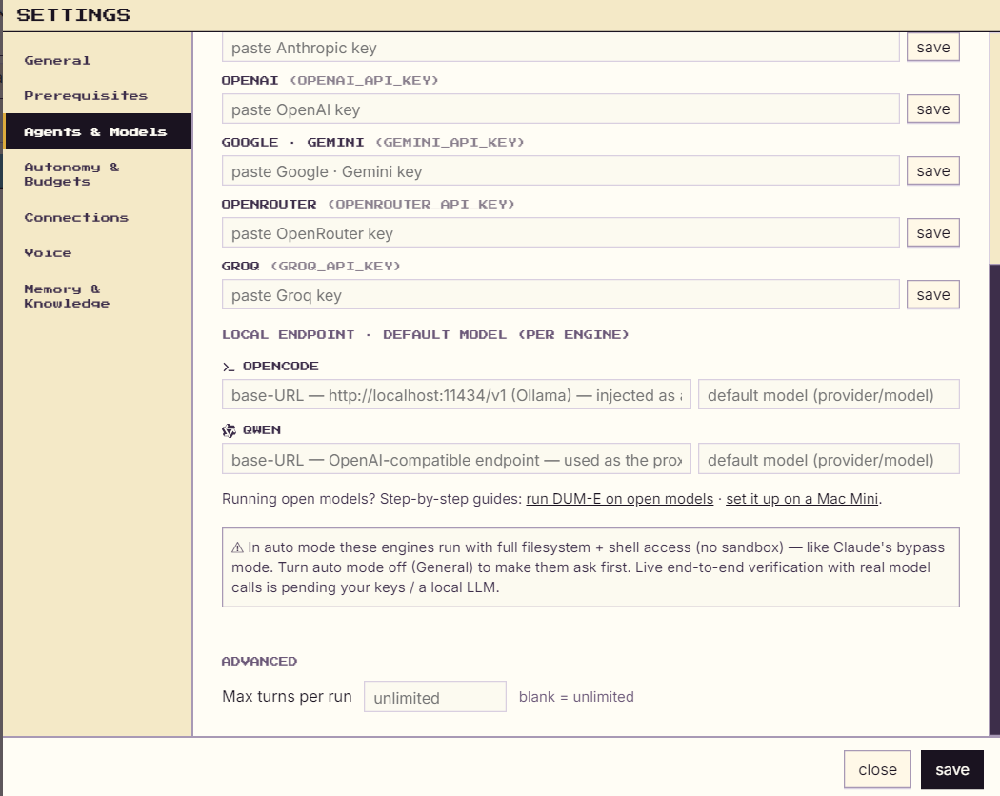
#download DISPATCH BAY
Start with one engine CLI. DUM-E handles the rest of the workshop setup.
win INSTALLER
DUM-E-0.1.1-win-x64-setup.exe
Standard per-user installer. No administrator access required.
Download for Windowswin PORTABLE
DUM-E-0.1.1-win-x64-portable.exe
Single-file portable build. No install. No registry changes.
Get portablelinux APPIMAGE
DUM-E-0.1.1-linux-x86_64.AppImage
Make executable, then run.
Download for LinuxBEFORE YOU RUN IT
These are unsigned builds. Windows SmartScreen and Linux desktop environments may ask you to trust DUM-E the first time it starts.
#requirements CHECKLIST
node YOU DO NOT INSTALL NODE
DUM-E installs Node.js and any missing agent CLIs itself on first use (via nodejs.org / npm). You only need Node yourself if you're building from source.
dev BUILDING FROM SOURCE
Windows builders: npm install may require Visual Studio Build Tools with "Desktop development with C++" for better-sqlite3.
#faq QUESTIONS
Yes. MIT licensed, built as an internal team tool.
Local-first. No telemetry, no analytics, no DUM-E cloud. Engine providers may have their own policies.
Qwen Code, Claude Code, OpenAI Codex, OpenCode, and configurable custom engines.
Depends on the engine. Bring-your-own-key and local LLM endpoints are supported.
The distributed builds are unsigned; SmartScreen may warn on first launch.
Windows is the primary target. A macOS build configuration exists, but treat it as experimental until it is verified.
Yes — file-based mailboxes, routing, shared tasks, memory, and reply tracking.